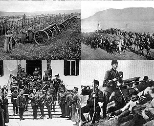

1912
- The Ottoman Empire controlled much of the Balkan Peninsula.
- Nationalist movements and uprisings occurred among various Balkan states seeking independence.
- Nationalist movements and uprisings occurred among various Balkan states seeking independence.
1912 - 1913
First Balkan War
- October 8, 1912: Montenegro declares war on the Ottoman Empire, marking the beginning of the First Balkan War.
- October 17, 1912: Serbia, Greece, and Bulgaria join Montenegro in the war against the Ottoman Empire.
- December 1912: Ottoman forces are pushed back, and the Balkan League forces achieve significant territorial gains.
- October 17, 1912: Serbia, Greece, and Bulgaria join Montenegro in the war against the Ottoman Empire.
- December 1912: Ottoman forces are pushed back, and the Balkan League forces achieve significant territorial gains.
1913
- May 30, 1913: The Treaty of London is signed, officially ending the First Balkan War.
- The Ottoman Empire loses most of its European territories, and the Balkan states begin to dispute the division of the spoils.
- The Ottoman Empire loses most of its European territories, and the Balkan states begin to dispute the division of the spoils.
1913
2 Balkan war
- June 16, 1913: Bulgaria, dissatisfied with its territorial gains, attacks its former allies Serbia and Greece, starting the Second Balkan War.
- July 10, 1913: The Treaty of Bucharest ends the Second Balkan War.
- Bulgaria loses territory, and the balance of power in the Balkans is rearranged.
- July 10, 1913: The Treaty of Bucharest ends the Second Balkan War.
- Bulgaria loses territory, and the balance of power in the Balkans is rearranged.
1912 - 1913

- November 28, 1912: Albania declares its independence from the Ottoman Empire.
- The Great Powers recognized Albania's independence through the Treaty of London in 1913.
- The Great Powers recognized Albania's independence through the Treaty of London in 1913.
Impact on the Ottoman Empire
- The Balkan Wars significantly weakened the Ottoman Empire, accelerating its decline.
- The loss of European territories contributes to the broader geopolitical changes in the region.
- The loss of European territories contributes to the broader geopolitical changes in the region.
Geopolitical Shifts
- The balance of power in the Balkans is altered with new alliances and rivalries emerging.
- Nationalist tensions and rivalries among the Balkan states persist.
- Nationalist tensions and rivalries among the Balkan states persist.
1914 - 1918

- The Balkan Wars set the stage for increased tensions in the region, contributing to the outbreak of World War I.
- The Balkans became a battleground during World War 1.
- The Balkans became a battleground during World War 1.
1920

- The Ottoman Empire signs the Treaty of Sèvres, leading to further territorial losses in the Balkans.
- The treaty marks the official dismantling of the Ottoman Empire.
- The treaty marks the official dismantling of the Ottoman Empire.
Legacy and Long-term Impact
- The Balkan Wars have a lasting impact on the political, ethnic, and social landscape of the region.
- Nationalist sentiments and historical grievances continue to shape the Balkans in the following decades.
- Nationalist sentiments and historical grievances continue to shape the Balkans in the following decades.